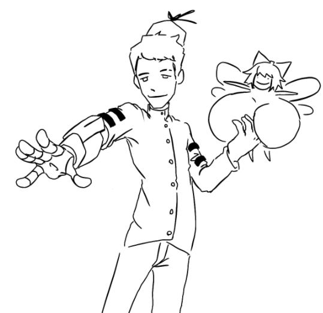
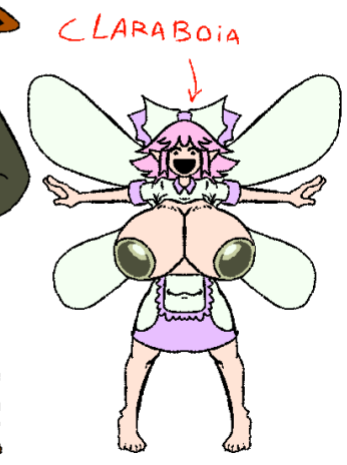
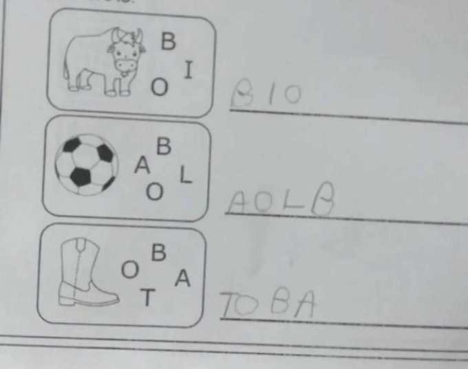

Yob
Criado sábado 16 julho 2022
ele foi teleportado no reino malvado ou alguma coisa assim e a primeira coisa que ele tentou fazer foi apalpar os seios de um dragao que cortou fora a mao dele mas ele conseguiu escapar e achou essa fada foda peituda que construiu um braço contanto que ela virasse a assitente dele que nao faz porra nenhuma
Claraboia
Fada que ajudou a yob quando ele perdeu o braco, ele achou o yob la sem braco correndo ai botou o dragao pra dormir, ela nasceu errado com magia condensada nas teta em vez das fada normal que a magia e nas asas e basicamente quando ela fica com pouca magia as teta diminui e quando fica grannde magia fica grande, ela nao ajuda mto o yob alem de fazer magia pra ele passar pela mao robotica

Claraboia teste de QI

Backlinks: Personagens:Protagonistas:Blool Personagens:Secundarios:El Gato